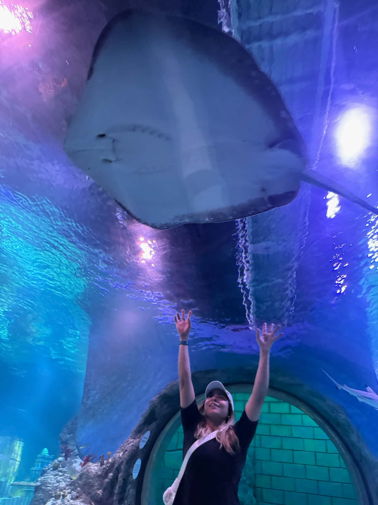

WDD 130 | Bruna Beck
Hello, My name is Bruna Beck. I'm originally from Recife, Brazil. I've been living in Utah for over 12 years. I moved here because my husband was from Utah. After he died (last year), I decided to go back to school. I'm truly grateful for the opportunity to learn web fundamentals. It's been an exciting journey so far. My goal is to become a software developer. I want to have a flexible work schedule and work from home. That way, I’ll be able to travel and spend more quality time with my daughter.